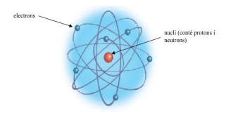
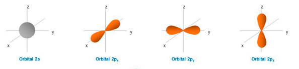

Ciència de l’electricitat
Per què el coure condueix l’electricitat?
El coure és un dels millors conductors d’electricitat, i per això s’utilitza en gairebé tots els cables elèctrics. Però, per què condueix tan bé? Per entendre-ho, cal conèixer la seva estructura atòmica i com es comporten els electrons dins d’un àtom.
Els electrons s’organitzen en capes
Els àtoms tenen un nucli al centre, format per protons (càrrega positiva) i neutrons (sense càrrega), i electrons (càrrega negativa) que giren al voltant del nucli en capes.
Aquestes capes es van omplint amb un nombre màxim d’electrons per capa i seguint un ordre específic.
Els electrons s’organitzen segons un patró establert: primer l’orbital 1s, després el 2s, 2p, 3s, 3p, 4s, etc. Cada tipus de subcapa electrònica pot allotjar un nombre màxim d’electrons segons la seva estructura: els orbitals s, amb forma esfèrica (com una bombolla al voltant del nucli), poden contenir fins a 2 electrons; els p, amb tres orientacions espacials (x, y, z), fins a 6; els d, amb cinc orbitals i formes més complexes, fins a 10; i els f, que apareixen en àtoms més grans i tenen set orbitals intricats, fins a 14 electrons. 
El primer element de la taula periòdica és l’hidrogen, l’àtom més senzill que existeix. Té un sol electró, que ocupa l’orbital 1s.
A dia d’avui, l’element conegut amb el nombre atòmic més alt és el oganessó (Og), amb 118 electrons. És un element artificial, creat en laboratoris. La seva configuració electrònica arriba fins al subnivell 7p, cosa que significa que ocupa set capes.
La configuració electrònica del coure
El coure té 29 electrons. La seva configuració electrònica és:
1s² 2s² 2p⁶ 3s² 3p⁶ 4s¹ 3d¹⁰
Això vol dir que els seus electrons s’omplen de dins cap enfora: primer les capes més properes al nucli, que estan fortament lligades, i després les més externes, que tenen més llibertat de moviment. L’electró més extern del coure està sol a l’orbital 4s, i és aquest el que fa que el coure sigui un bon conductor.

Electrons lliures i enllaços entre àtoms
Quan un àtom té electrons no aparellats en la seva capa més externa (com el coure amb el seu electró 4s), aquests poden moure’s amb facilitat. Els electrons externs, o de valència, són els que participen en els enllaços químics amb altres àtoms. Quan un electró no està fortament lligat, pot moure’s lliurement entre àtoms veïns.
Això és precisament el que passa en un metall com el coure: cada àtom cedeix fàcilment el seu electró més extern, que es converteix en un electró lliure. Aquests electrons lliures poden moure’s per tot el material com si fossin un núvol dins d’una xarxa d’àtoms positius. Aquesta mobilitat permet que el coure condueixi l’electricitat amb molta eficàcia.
Conducció elèctrica en metalls
En els metalls, els àtoms estan col·locats formant una estructura ordenada, i els electrons lliures poden desplaçar-se fàcilment d’un àtom a un altre. Quan connectem un metall com el coure a una font de tensió (com una pila o una bateria), els electrons es mouen tots en una mateixa direcció: això és el corrent elèctric.

A diferència de materials com la fusta o el plàstic, que no tenen electrons lliures i són aïllants, els metalls tenen molts electrons mòbils. Això explica per què el coure, amb el seu electró 4s solitari i fàcilment deslliurable, és tan útil en el món de l’electricitat.
Resum
- El coure té 29 electrons organitzats en capes (configuració: 1s² 2s² 2p⁶ 3s² 3p⁶ 4s¹ 3d¹⁰).
- L’electró 4s és l’únic electró extern i està poc lligat al nucli.
- Aquest electró pot moure’s lliurement, convertint-se en un electró lliure.
- Els electrons lliures permeten la conducció elèctrica en els metalls.
- El coure, per la seva estructura, és un dels millors conductors elèctrics.
Comparació entre coure, plata i alumini
Els orbitals de la plata i l’alumini
Igual que el coure, la plata i l’alumini tenen estructures d’electrons particulars que expliquen el seu comportament com a conductors.
Plata (Ag)
La plata té 47 electrons. La seva configuració electrònica completa és:
1s² 2s² 2p⁶ 3s² 3p⁶ 4s² 3d¹⁰ 4p⁶ 5s¹ 4d¹⁰ (o de forma abreujada: [Kr] 4d¹⁰ 5s¹)
Aquesta configuració mostra que els orbitals 4d estan completament plens amb 10 electrons, i que l’electró desaparellat que pot moure’s lliurement es troba a l’orbital 5s.
Tot i que pot semblar que hauria d’anar al subnivell 4f, això no és així. Els orbitals f no comencen a omplir-se fins al nombre atòmic 58 (els lantànids). Per tant, en la plata, els nivells f encara no entren en joc.
L’electró 5s¹ de la plata està prou allunyat del nucli i poc lligat, per això es pot moure amb facilitat. Això fa que la plata sigui el millor conductor d’electricitat conegut, tot i que el seu cost elevat en limita l’ús pràctic.
La plata té 47 electrons. La seva configuració electrònica és una mica especial:
1s² 2s² 2p⁶ 3s² 3p⁶ 4s² 3d¹⁰ 4p⁶ 5s¹ 4d¹⁰
Tot i que podríem esperar que la capa més externa tingués dos electrons (5s²), en realitat, com passa amb el coure, la plata té un sol electró al nivell 5s. Aquest electró 5s¹ està relativament lliure i pot moure’s fàcilment, cosa que permet una conductivitat elèctrica excel·lent. A més, els orbitals 4d estan completament plens (4d¹⁰), cosa que estabilitza l’àtom.
Per què la plata no segueix exactament la regla?
Segons la regla d’ompliment energètic (regla d’Aufbau), esperaríem que la configuració electrònica de la plata fos:
[Kr] 5s² 4d⁹
Però la configuració real és:
[Kr] 4d¹⁰ 5s¹
Per què? La resposta té a veure amb l’estabilitat especial dels orbitals d. Els subnivells d⁵ (mig plens) i d¹⁰ (completament plens) tenen una estabilitat addicional respecte d’altres configuracions. Això es deu a com es distribueixen els electrons en els orbitals d, minimitzant la repulsió entre ells.
En el cas de la plata, l’àtom guanya estabilitat quan un electró del 5s “salta” al subnivell 4d, completant-lo amb 10 electrons. Aquest intercanvi té un cost energètic molt petit, però el guany d’estabilitat per tenir el subnivell 4d complet és més gran.
Això també passa amb altres elements com el coure (Cu) i el crom (Cr), que també tenen configuracions que “trenquen” lleugerament la regla general per assolir una configuració més estable.
Resum visual
- Configuració teòrica: [Kr] 5s² 4d⁹
- Configuració real (observada): [Kr] 4d¹⁰ 5s¹
- Raó: tenir el subnivell d complet (d¹⁰) és energèticament més estable
Alumini (Al)
L’alumini té 13 electrons. La seva configuració electrònica és:
1s² 2s² 2p⁶ 3s² 3p¹
Això vol dir que l’alumini té 3 electrons de valència (3s² 3p¹), però només un d’ells (el 3p¹) està sol i no aparellat, la qual cosa facilita la seva participació en reaccions i enllaços. Els orbitals p tenen forma de vuit i s’orienten en tres direccions diferents (x, y, z). L’electró 3p¹ és prou allunyat del nucli per moure’s amb relativa llibertat, i això permet que l’alumini condueixi l’electricitat, tot i que no tan bé com el coure o la plata.
L’alumini no té tants electrons lliures com la plata o el coure, però el seu baix pes i preu fan que sigui molt útil per transportar electricitat en grans distàncies.
L’alumini té 13 electrons. La seva configuració electrònica és:
1s² 2s² 2p⁶ 3s² 3p¹ (o de forma abreujada: [Ne] 3s² 3p¹)
Té tres electrons de valència, però només un d’ells (3p¹) està desaparellat. Aquest electró és el que pot participar en enllaços o moure’s en determinades condicions. Com que està en una capa més externa i menys lligada, també pot contribuir a la conducció elèctrica, tot i que amb menys eficiència que el coure o la plata.
Tot i que el coure és molt utilitzat com a conductor elèctric, hi ha altres materials que també condueixen molt bé l’electricitat. Els més destacats són la plata i l’alumini. Vegem com es comparen en diversos aspectes:
| Propietat | Plata | Coure | Alumini |
|---|---|---|---|
| Conductivitat elèctrica | La més alta de tots els metalls | Molt alta (lleugerament inferior a la plata) | Inferior al coure, però bona |
| Durabilitat | Excel·lent, però pot oxidar-se lleugerament | Excel·lent, resistent a la corrosió | Menys resistent: forma una capa d'òxid protectora |
| Cost | Molt alt | Moderadament alt | Baix |
| Pes | Alt | Mitjà-alt | Molt lleuger |
| Ús habitual | Electrònica de precisió | Instal·lacions elèctriques, motors, cables | Línies d’alta tensió, estructures lleugeres |
Resum dels orbitals i la conducció
- Plata (Ag): Té un electró desaparellat al 5s¹. Orbitals 4d plens. Molt bona conductivitat.
- Coure (Cu): Té un electró desaparellat al 4s¹. Orbitals 3d plens. Gran conductor.
- Alumini (Al): Té un electró desaparellat al 3p¹. Conductor mitjà, però molt lleuger i barat.
Per què no fem servir sempre la plata?
Tot i que la plata és el millor conductor d’electricitat, no es fa servir habitualment per cables elèctrics perquè és molt cara. Es reserva per a aplicacions especials, com circuits electrònics sensibles o contactes elèctrics on la pèrdua d’energia ha de ser mínima.
Quan es fa servir l’alumini?
L’alumini és més lleuger i més barat que el coure, i per això es fa servir en línies d’alta tensió o en aplicacions on el pes és un factor important. Tot i tenir una conductivitat menor, el seu pes lleuger permet utilitzar cables més gruixuts sense que siguin difícils de manipular.
El coure, el millor equilibri
El coure representa un bon equilibri entre eficiència, durabilitat i cost. Té una conductivitat molt elevada, és resistent a la corrosió, fàcil de treballar i més assequible que la plata. Per això, és el conductor més habitual en sistemes elèctrics domèstics, industrials i electrònics.